FEATURE 01
이중 진입 경로
랜딩에 조건 검색 필과 카테고리 아이콘 행을 나란히 배치해, 목적지가 정해진 사용자와 아직 둘러보는 중인 사용자를 모두 받아냅니다. "'아직 모름'을 골라도 괜찮아요 — 둘러보며 정할 수 있어요"라는 힌트 문구를 넣어, 결정을 강요하지 않고 탐색으로 자연스럽게 유도한 것이 이 프로젝트에서 가장 신경 쓴 디테일입니다.
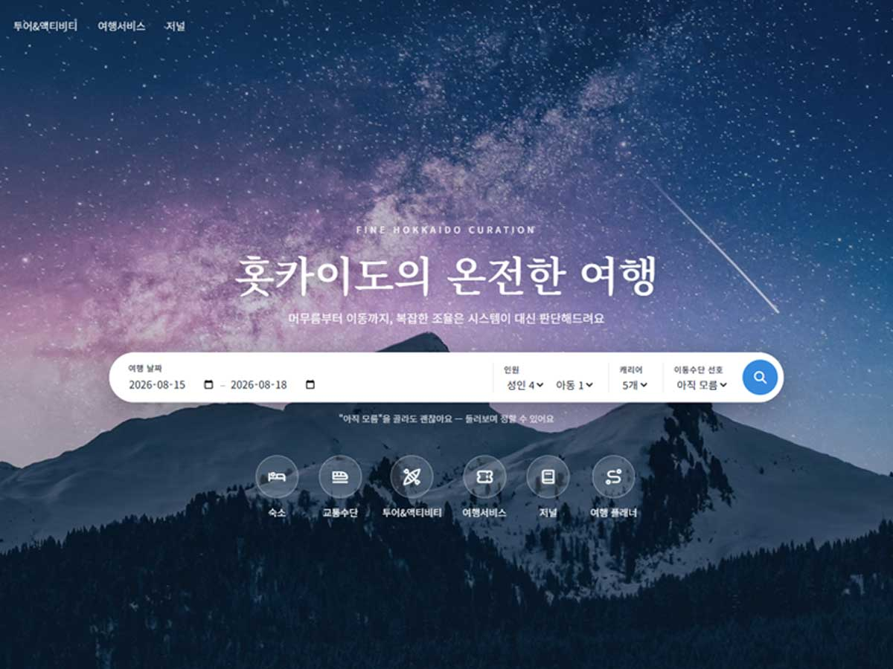
BRANDING RATIONALE
온홋카이도는 리뉴얼이 아니라 처음부터 브랜드 콘셉트를 새로 세운 프로젝트입니다. 여행을 계획할 때 숙소·교통·액티비티를 각각 다른 곳에서 찾고 사람 수·일정·자격 조건까지 스스로 맞춰야 하는 번거로움에서 출발해, "복잡한 조율은 시스템이 대신 판단한다"는 문장을 브랜드 슬로건이자 제품 설계 원칙으로 세웠습니다.
BRAND NAME
'온홋카이도'는 '온전한' + '홋카이도'의 합성어입니다. 여러 서비스를 짜깁기해 여행을 완성하는 대신, 하나의 플래너가 여정을 온전히 책임진다는 의미를 이름에 담았습니다.
WHY TWO DESIGN LANGUAGES
숙소는 스테이폴리오(사진이 주인공, 영문 지역 라벨), 교통·액티비티는 클룩(평점·후기·가격 강조) 사이트를 디자인 레퍼런스로 참고했습니다. 머무는 공간은 감성으로, 예약이 목적인 상품은 신뢰감 있는 정보 밀도로 보여줘야 한다고 판단했습니다.
COLOR
프라이머리로 밝은 블루(#378ADD)를 선택했습니다. 이동·하늘·신뢰를 동시에 표현할 수 있는 색이라 여행 서비스의 톤에 맞다고 판단했고, 진한 네이비(#0C447C)를 딥 컬러로 짝지어 정보 위계를 분명히 했습니다.
INCLUSIVE STATUS COLOR
위험·경고·성공 같은 상태 색상은 색상만으로 구분하지 않고 항상 텍스트를 함께 병기하도록 설계했습니다. 색약 사용자도 같은 정보를 놓치지 않게 하려는 결정입니다.
DESIGN TOKENS
COLOR
TYPE
NOTO SANS KR
머무름부터 이동까지, 온전한 여행
본문 · UI · 버튼 · 폼 등 전반
NOTO SERIF KR
홋카이도의 온전한 여행
히어로 타이틀 · 저널 큐레이션 헤드라인 (.serif)
OVERVIEW
랜딩 · 숙소 리스트/상세 · 교통수단 허브 · 투어&액티비티 리스트/상세 ·
여행서비스(쇼핑/식당 상세 포함) · 저널 · 여행 플래너 · 결제(Step 1~4) · 예약 완료까지,
14개의 실제 개별 페이지로
구성했습니다. 각 페이지는 독립적으로 열리지만, trip · cart ·
travelers · pay 상태를 localStorage에
공유하기 때문에 랜딩에서 입력한 조건이나 플래너에 담은 상품이 다른 페이지로
이동해도 그대로 유지됩니다. 단순 목업이 아니라 상품 담기 → 인원/연령 검증 →
결제 → 완료로 이어지는 실제 커머스 퍼널의 상태 흐름을 갖췄습니다.

랜딩은 14개 페이지 중 하나일 뿐이라, 나머지 화면도 함께 봐야 구조가 읽힙니다.
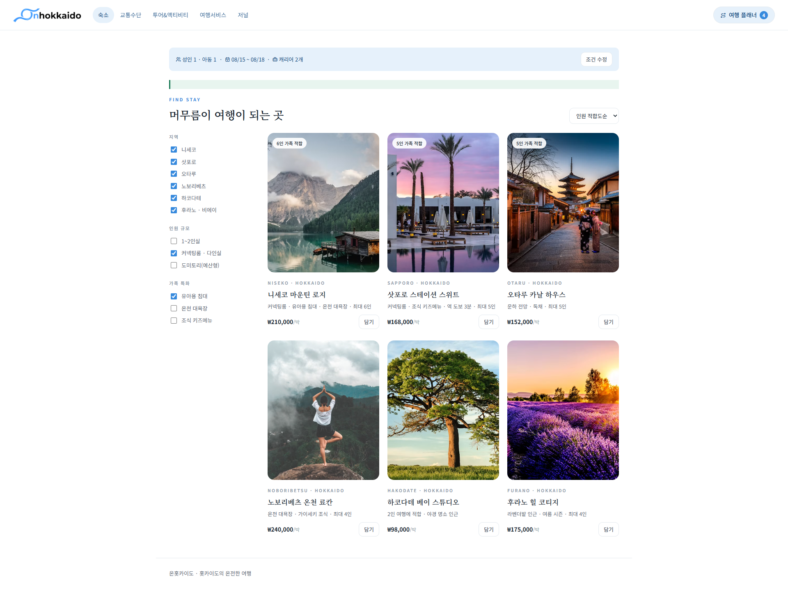
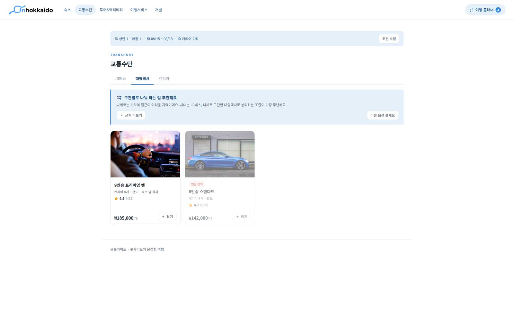
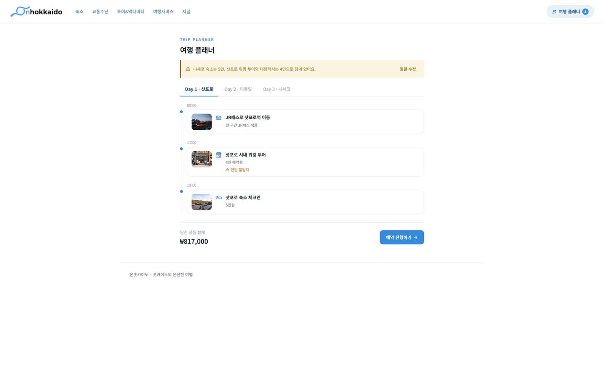
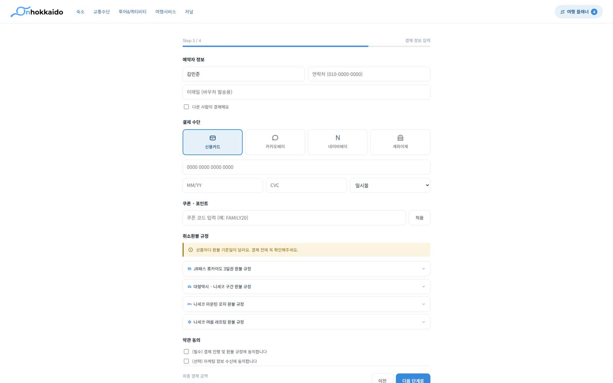
KEY FEATURES
FEATURE 01
랜딩에 조건 검색 필과 카테고리 아이콘 행을 나란히 배치해, 목적지가 정해진 사용자와 아직 둘러보는 중인 사용자를 모두 받아냅니다. "'아직 모름'을 골라도 괜찮아요 — 둘러보며 정할 수 있어요"라는 힌트 문구를 넣어, 결정을 강요하지 않고 탐색으로 자연스럽게 유도한 것이 이 프로젝트에서 가장 신경 쓴 디테일입니다.

FEATURE 02
인원·짐 개수·역 접근성 3가지 축으로 점수를 매겨 JR패스 / 대형택시 / 렌터카 중 하나를 추천 배너로 제시합니다. '근거 더보기'를 누르면 비교표가 펼쳐져서, 추천이 왜 그렇게 나왔는지 사용자가 직접 확인할 수 있습니다 — 시스템이 대신 판단하되, 판단 과정을 숨기지 않는 방식입니다.
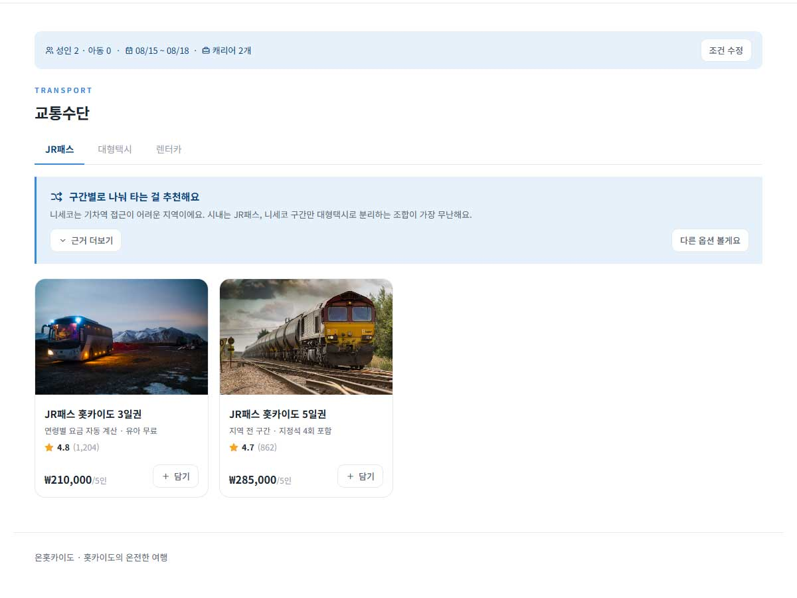
FEATURE 03
정원이 맞지 않는 숙소를 목록에서 아예 제외하는 대신, 하단에 '인원 초과' 배지와 함께 그대로 노출합니다. 왜 그 상품이 안 되는지 이유와 함께 보여주는 편이, 선택지를 조용히 지우는 것보다 사용자에게 더 친절하다고 판단했습니다.
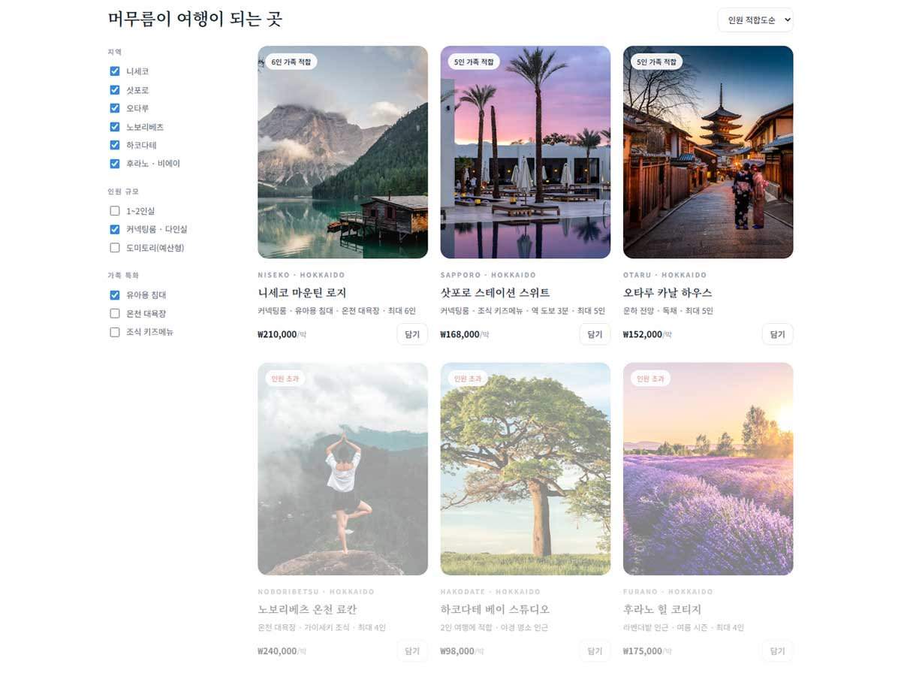
FEATURE 04
플래너에서 인원이 안 맞는 상품은 전역 배너와 카드별 경고로 이중 안내하고, '일괄 수정' 버튼으로 한 번에 맞출 수 있습니다. 시스템이 자동으로 바꾼 교통수단은 '렌터카로 되돌리기'로 원복 가능하며, 결제 Step 1~4 각각에 검증 게이트를 두어 인원·생년월일·연령 자격 조건이 충족되지 않으면 다음 단계로 넘어가지 못하게 막습니다. 연령 제한에 걸린 동행자를 발견하면 '제외하고 진행' 또는 '상품 삭제' 두 경로를 바로 제시해, 막다른 길에 두지 않는 것도 이 프로젝트가 지킨 원칙입니다.
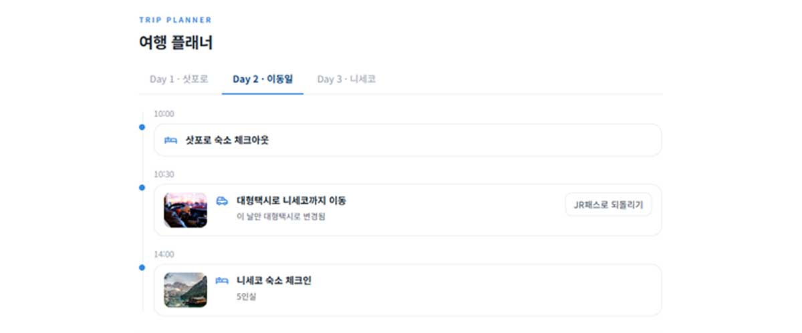
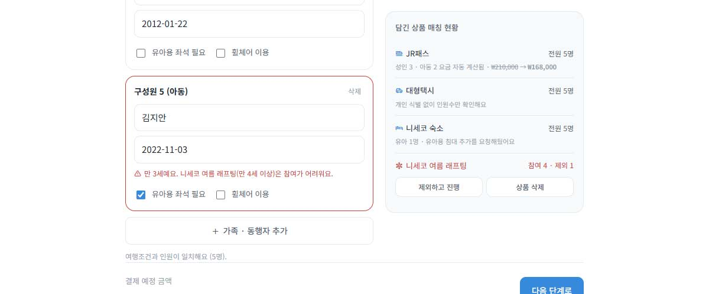
FEATURE 05
저널의 지역 소개 글은 다시 읽는 콘텐츠로 끝나지 않습니다. 본문 중간에 "이 지역 숙소 미리 보기" 카드를 인라인으로 심어두고, 클릭하면 숙소·액티비티 페이지로 이동하면서 해당 지역만 걸러 보여줍니다. 여행 조건의 날짜가 그 지역의 베스트 시즌과 겹치면 안내 배너도 자동으로 뜨죠. 정보를 읽다가 바로 예약으로 넘어갈 수 있도록, 콘텐츠와 커머스 페이지를 쿼리 파라미터로 연결했습니다.
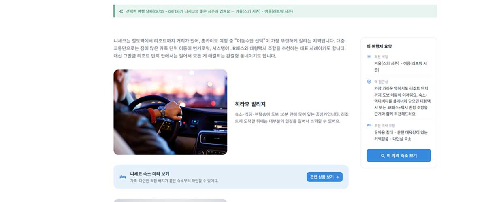
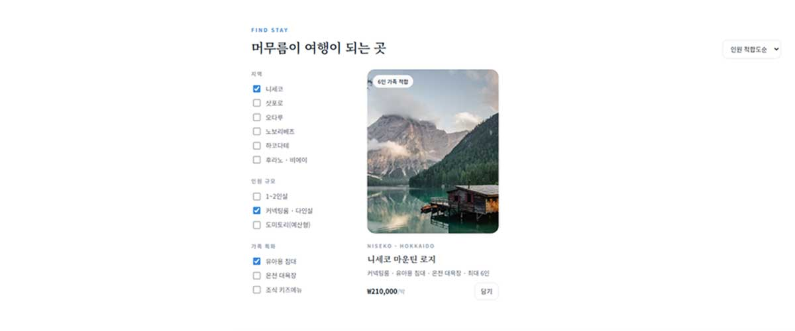
FEATURE 06
결제 버튼을 누른 뒤 처리 대기 상태를 거쳐, 담아둔 숙소가 "결제 중 품절"되는 상황을 재현합니다. 이때 나머지 상품은 정상 예약을 유지하고 품절된 상품 금액만 자동 환불 안내를 띄운 뒤, "대체 숙소 찾기"와 "이 상품 없이 진행" 두 갈래 선택지를 바로 제시합니다. 결제 실패를 오류 화면으로 끝내지 않고, 나머지 예약은 지키면서 다음 행동을 고를 수 있게 설계한 엣지 케이스입니다.
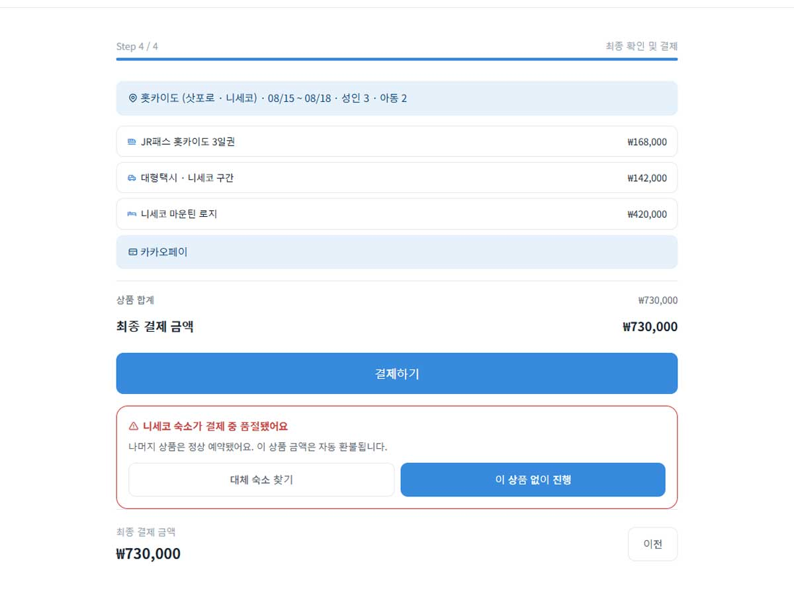
RESPONSIVE
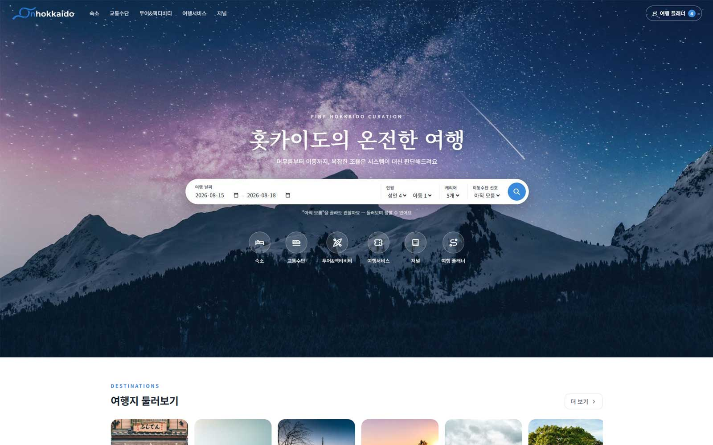
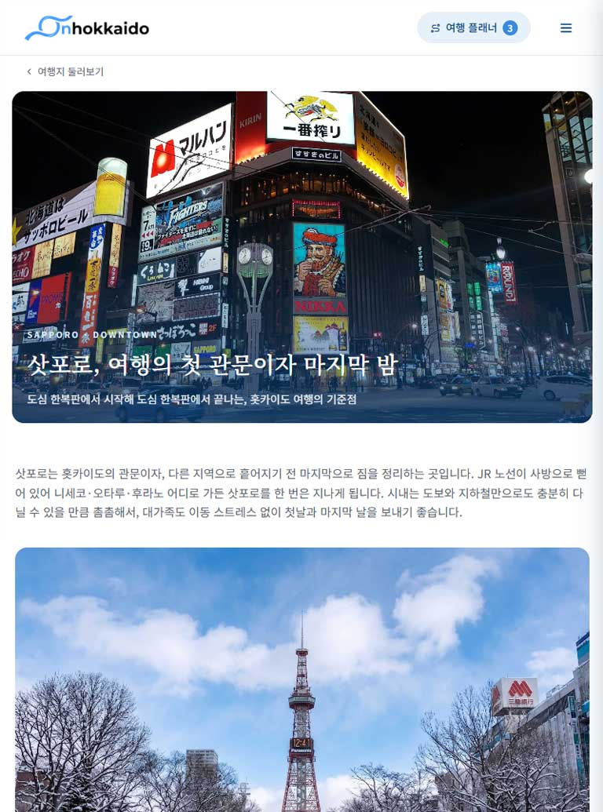
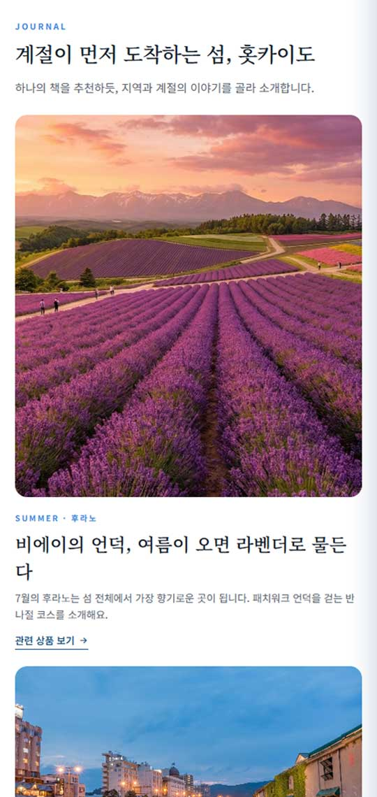
#mobile-nav)가 대체 진입 경로 역할을 합니다.TROUBLESHOOTING LOG
코드 리뷰를 이어가며 발견한 문제를 하나씩 고쳐온 기록입니다.
발견모바일에서 숙소·교통·액티비티 같은 서브 뷰에 진입하면, 다른 카테고리로 이동할 방법이 로고 클릭(홈으로)이나 여행 플래너 버튼뿐이었습니다. .global-nav가 960px 이하에서 display:none 처리만 되어 있고 이를 대체할 메뉴가 없었습니다.
서브 뷰에 들어간 뒤에도 카테고리를 자유롭게 오갈 수 있어야, 실제 서비스처럼 자연스럽게 둘러볼 수 있습니다.
해결헤더에 햄버거 버튼(#nav-toggle)을 추가하고, 오른쪽에서 슬라이드인되는 메뉴(#mobile-nav)를 새로 만들었습니다. 5개 카테고리 + 여행 플래너로 서브 뷰 어디서든 이동할 수 있고, 배경 클릭·닫기 버튼·ESC 키로 닫히며 데스크톱 너비로 리사이즈되면 자동으로 닫힙니다. css/styles.css(28-1번 섹션), js/common.js의 initMobileNav() 참고.
발견랜딩 조건 검색 필의 기본 날짜와 연령 계산 기준일이 2026-08-15로 하드코딩되어 있어, 이 시점 이후 데모를 열면 날짜 선택기가 과거로 열렸습니다.
기능 자체엔 문제가 없지만, 시연 시점에 따라 첫인상에서 신뢰도가 떨어질 수 있었습니다.
해결common.js의 computeDefaultTripDates()가 new Date() 기준 "오늘로부터 2주 뒤, 3박 4일"을 매번 새로 계산하도록 바꿨습니다. ageOf()의 연령 계산 기준일도 하드코딩 대신 trip.start(현재 저장된 여행조건의 출발일)를 쓰도록 수정했고, index.html 날짜 인풋에 박혀 있던 value="2026-08-15"도 지워 landing.js가 페이지 로드 시 trip 값으로 채우도록 했습니다.
발견교통수단 규칙 기반 추천의 hasHardRegion 조건이 "플래너에 니세코(역 접근 어려움) 숙소가 담겨 있음"을 가정한 상수로 고정되어 있어, 항상 같은 추천 경로를 탔습니다.
데모 시연 목적으로는 합리적인 선택이었지만, 실 서비스로 전환할 때 반드시 교체해야 할 지점이라는 걸 문서로 남겨두지 않으면 이관 시 누락될 수 있었습니다.
해결transport.js에 hasHardAccessRegionInCart()를 추가해서, 플래너에 담긴 숙소 이름을 stays 배열과 매칭 → 지역 확인 → destinationDetails[slug].accessHard 플래그로 실제 접근성을 판단하도록 교체했습니다. 이름 매칭 방식의 한계, 추천 문장 안 지역명 하드코딩, "담기" 버튼이 아직 실제 장바구니를 안 바꾸는 점처럼 이관 시 놓치기 쉬운 지점은 코드 주석과 NOTES.md(루트에 신규 생성)에 함께 정리해뒀습니다.
배경초기 버전은 숙소·교통·액티비티·여행서비스가 전부 가상의 이름과 설명으로 채워져 있어, 데모를 오래 들여다볼수록 실제 서비스처럼 느껴지지 않는 지점이 보였습니다.
UI 패턴을 검증하는 데는 문제가 없었지만, 포트폴리오로 보여줄 땐 실제 존재하는 정보 위에서 흐름이 자연스러운지까지 보여주고 싶었습니다.
반영숙소 18곳(힐튼 니세코 빌리지, JR타워 호텔 닛코 삿포로 등), 액티비티 4종(NAC 니세코 어드벤처 센터, 비에이 뷰 버스, 오타루 운하 크루즈, 노보리베츠 게이트웨이 센터), 교통수단(JR 홋카이도 레일패스, MK택시, 토요타 렌터카 등), 여행서비스(돈키호테·빅카메라 쇼핑쿠폰, 테이블체크 식당 예약)까지 전부 실존 업체명·주소·연락처로 교체했습니다. 이 과정에서 JR 삿포로-후라노 에리어 패스가 니세코 구간을 커버하지 않는다는 사실을 확인해, 교통수단 추천 로직과 플래너의 되돌리기 버튼(JR패스 → 렌터카)을 함께 고쳤고 래프팅 최저 연령도 실제 기준(만 6세)에 맞춰 검증 로직을 갱신했습니다. 액티비티·여행서비스(쇼핑/식당)에는 각각 activity-detail.html·service-shopping.html·service-restaurant.html 상세 페이지도 새로 만들어, 전체 페이지 수가 9개에서 14개로 늘었습니다.